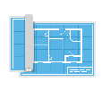
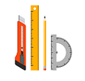

- Świadczymy profesjonalne usługi geodezyjne od 1993 r. Działamy w powiatach legionowskim i pułtuskim. Wieloletnie doświadczenie przekłada się na wysoką jakość usług.
O nas
Oferta
Świadczymy profesjonalne oraz kompleksowe usługi w zakresie:

wszystkich map potrzebnych przy inwestycjach
podziału działek
doradztwa przy zakupie i sprzedaży nieruchomośći

projektowaniu przyłączy i budynków
obsługi inwestycji
Świadczymy usługi dla firm, instytucji i klientów prywatnych
Zapewniamy doradztwo, miłą i fachową obsługę oraz korzystne ceny
Jesteśmy dyspozycyjni i możemy dostosować się do klienta
Podpowiemy w wyborze lokalnych wykonawców
- Geodeta Eryk Brodowski
- NIP: 5681544978
- Adres e-mail: geodezja.serock@wp.pl
- Tel. +48 535 855 260
Kontakt
- poniedziałek - piątek: 7:00- 16:00
- sobota - po wcześniejszym uzgodnieniu telefonicznym
- niedziela - zamknięte